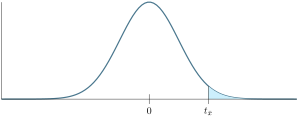
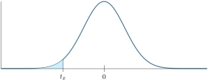
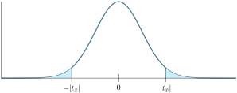

Section6.2Confidence Intervals and Hypothesis Testing for a single Numerical Variable (N2)
In this section, we apply the concepts of confidence intervals and hypothesis testing to numerical rather than categorical variables.
Subsection6.2.1Confidence Intervals
Remark6.2.1.
Recall Definition 4.2.1. For a numerical variable in particular, a C% confidence interval is an interval \([L, U]\) so that the true mean of the variable, \(\mu\text{,}\) has a C% chance of lying within the interval.
For a numerical sample of size \(n\) with sample mean \(\bar{x}\) and sample standard deviation \(s\text{,}\) we recall that the standard error is \(SE=\frac{s}{\sqrt{n}}\text{.}\) Thus, we can compute a C% confidence interval via
where \(t^*\) is the \(t\) value so that \(P(-t^*\lt t \lt t^*)=C\%\) for a \(t\)-distribution with \(n-1\) degrees of freedom.
Figure6.2.2.A C% confidence interval for \(\mu\text{.}\) There is a C% chance the population mean \(\mu\) lies in this interval.
Activity6.2.1.Credit Card Debt.
Suppose we wanted to find a 95% confidence interval for the average credit card debt of a student. In a sample of 25 college students, the sample average debt was \(\$375\) with sample standard deviation \(\$85\text{.}\)
(a)
Which of the following are given to us:
\(n\) the sample size.
\(\bar{x}\) the sample mean.
\(s\) the sample standard deviation.
\(\mu\) the population mean.
\(\sigma\) the population standard deviation.
(b)
Which of the following is the parameter of interest:
\(n\) the sample size.
\(\bar{x}\) the sample mean.
\(s\) the sample standard deviation.
\(\mu\) the population mean.
\(\sigma\) the population standard deviation.
(c)
Compute the standard error \(SE\text{.}\)
(d)
Compute the degrees of freedom.
(e)
Find \(t^*\) such that for a \(t\)-distribution with the appropriate degrees of freedom, \(P(-t^*\lt t\lt t^*)=0.95\text{.}\)
Suppose we wanted to take samples of n=50 houses to determine a confidence interval. Find \(t^*\)so that for a \(t\)-distribution with 49 degrees of freedom, we have: \(P(-t^*\lt t\lt t^*)=0.95\text{.}\)
Run the following code to take a sample of size n=50 houses from ames and display their price.
(c)
Run the following code to display the sample mean and standard deviation for this sample.
(d)
Use the sample mean \(\bar{x}\text{,}\) sample standard deviation \(s\text{,}\) sample size \(n\) and \(t^*\) to compute a 95% confidence interval for the average housing price of Ames, IA.
(e)
Use the sample mean \(\bar{x}\text{,}\) sample standard deviation \(s\text{,}\) sample size \(n\) and \(t^*\) to compute a 95% confidence interval for the average housing price of Ames, IA.
(f)
Explain the meaning of your confidence interval in a complete sentence within the context of this problem.
(g)
Run the following code, to compute a 95% confidence interval for the average housing price of Ames, IA. How does it compare to what you found in (d)?
(h)
Run the following code, to compute the actual average housing price of Ames, IA. Does it fall within your interval?
(i)
Fix and run the following code to, for 100 times, sample 50 homes and construct a 95% confidence interval based on the results. Let tstar=\(t^*\text{.}\)
How many of these intervals do not contain the average housing price? Is this suprising?
Subsection6.2.2Hypothesis Testing with a Single Numerical Variable
Exploration6.2.3.Running Times.
In 2020, the average finishing time of a race was 95 minutes. The race organizer believes that in 2021, the average finishing time will be less. They sample 20 random runners from the 2021 race and their finishing times in minutes were:
What is the sample size \(n\text{,}\) mean \(\bar{x}\text{,}\) and standard deviation \(s\) of this distribution?
(b)
What is the standard error \(SE\) for this distribution? (Recall Theorem 6.1.2)
(c)
Suppose hypothetically that the average finishing time had not changed, so \(\mu=95\text{.}\) Find \(t_{\bar{x}}\text{,}\) the \(t\)-score for \(\bar{x}\text{.}\) (Recall Activity 6.1.5)
(d)
Find the probability that, if the average finishing time had not changed, that you could sample 20 runners and have an average running speed of \(\bar{x}\) or lower by computing \(P(t\lt t_{\bar{x}})\) for a \(t\)-distribution with the appropriate degrees of freedom.
Is it plausible that the average finishing time could still be 95 minutes?
Remark6.2.3.Numerical Hypothesis Testing.
Hypothesis Testing for a numerical variable follows similarly from how it does for categorical variables as seen in Section 4.3. There is a random numerical variable with unknown true mean \(\mu\text{,}\) that we want to say something about, and we gather data to reject or fail to reject a null hypothesis.
When doing numerical hypothesis testing, there are three types of Alternative Hypothesis:
\(\displaystyle H_A: \mu\neq \mu_0\)
\(\displaystyle H_A: \mu>\mu_0\)
\(\displaystyle H_A: \mu\lt \mu_0\)
Corresponding to “the true mean is (not equal to/greater than/less than) \(\mu_0\)” for some value \(\mu_0\text{.}\)
In all of these cases, the Null Hypothesis will be: \(H_A: \mu=\mu_0\text{,}\) that is, the true mean could be \(\mu_0\text{.}\)
Then as before, we're given a sample from which we can compute a sample mean, \(\bar{x}\text{,}\) standard deviation \(s\) and sample size \(n\text{.}\) We then compute a \(p\)-value for the alternative hypothesis. The \(p\)-value still represent: “The probability that if we were to assume the null hypothesis, that we could observe values as or more extremal than the sample.”
The way \(p\)-values are computed depends on the form of the alternative hypothesis:
If \(H_A\) is of the form \(\mu>\mu_0\) then allowing \(X\) to be the \(t\)-variable with mean \(\mu_0\text{,}\) standard deviation \(SE=\frac{s}{\sqrt{n}}\) and \(n-1\) degrees of fredom, the \(p\)-value is
Figure6.2.4.\(p\)-value for \(H_A:\mu>\mu_0\text{.}\) We do this by finding the corresponding \(t\)-score of \(\bar{x}\) and find the probability that \(P(t>z_{\bar{x}})\) for the standard \(t\) variable with \(n-1\) degrees of freedom:

Figure6.2.5.\(p\)-value for \(H_A:\mu>\mu_0\) using \(t\)-scores.
If \(H_A\) is of the form \(\mu\lt \mu_0\) then allowing \(X\) to be the \(t\)-variable with mean \(\mu_0\text{,}\) standard deviation \(SE=\frac{s}{\sqrt{n}}\) and \(n-1\) degrees of fredom, the \(p\)-value is
Figure6.2.6.\(p\)-value for \(H_A:\mu\lt \mu_0\text{.}\) We do this by finding the corresponding \(t\)-score of \(\bar{x}\) and find the probability that \(P(t\lt t_{\bar{x}})\) for the standard \(t\)-variable with \(n-1\) degrees of freedom:

Figure6.2.7.\(p\)-value for \(H_A:\mu\lt \mu_0\) using \(t\)-scores.
If \(H_A\) is of the form \(\mu\neq \mu_0\) then things are more complicated. We still let \(X\) be the \(t\)-variable with mean \(\mu_0\text{,}\) standard deviation \(SE=\frac{s}{\sqrt{n}}\) and \(n-1\) degrees of freedom. But in this case, extremal means at least as far to the left or the right of \(\mu_0\text{.}\) So we can compute the \(p\)-value via
Figure6.2.8.\(p\)-value for \(H_A:\mu\neq \mu_0\text{.}\) We do this by finding the corresponding \(t\)-score of \(\bar{x}\) and find the probability that \(P(|t|> |t_{\bar{x}}|)=P(t> |t_{\bar{x}}|)+P(t\lt -|t_{\bar{x}}|)\) for the standard \(t\)-variable with \(n-1\) degrees of freedom:

Figure6.2.9.\(p\)-value for \(H_A:\mu\neq \mu_0\) using \(t\)-scores. It's also worth noting that for either of these tails, \(P(X>\mu_0+|\bar{x}-\mu_0|)=P(X\lt \mu_0-|\bar{x}-\mu_0|)\) and \(P(t> |t_{\bar{x}}|)=P(t\lt -|t_{\bar{x}}|)\text{.}\) So if you find one of these tails, you can double it to find the sum of both tails.
In (d), we computed the \(p\)-value by finding \(P(t\lt −2.35976)\approx 0.01457\) in a \(t\)-distribution with 19 degrees of freedom.
Activity6.2.4.Time on Social Media.
A researcher believes adults spend on average 2 hours and 20 minutes a day on social media. Their colleague disagrees. They survey 100 adults, and found a sample mean of 2 hours and 17 minutes, with standard deviation 23.5 minutes. Suppose we had a level of significance \(\alpha=0.1\text{.}\)
(a)
Which of the following best describes the null hypothesis \(H_0\text{?}\)
\(\mu\lt 140\) minutes.
\(\mu> 140\) minutes.
\(\mu\neq 140\) minutes.
\(\mu= 140\) minutes.
(b)
Which of the following best describes the alternative hypothesis \(H_A\text{?}\)
\(\mu\lt 140\) minutes.
\(\mu> 140\) minutes.
\(\mu\neq 140\) minutes.
\(\mu= 140\) minutes.
(c)
Find the standard error \(SE\text{.}\)
(d)
Find \(t\)-score for \(\bar{x}\text{.}\)
(e)
Compute a \(p\)-value (be sure to use the appropriate level of significance).
State the meaning of the \(p\)-value within the context of this problem in a complete sentence.
(g)
Do we reject the null hypothesis?
(h)
What sort of error could have been made? (Type 1 or Type 2)
Activity6.2.5.Restaurant Bill.
Our recurring restaurateur believes that the average amount spent by customers is over $12. She plans on polling 50 customers to test this. Suppose we had a level of significance \(\alpha=0.05\text{.}\)
(a)
Which of the following best describes the null hypothesis \(H_0\text{?}\)
\(\mu\lt \$12\text{.}\)
\(\mu> \$12\text{.}\)
\(\mu\neq \$12\text{.}\)
\(\mu= \$12\text{.}\)
(b)
Which of the following best describes the alternative hypothesis \(H_A\text{?}\)
\(\mu\lt \$12\text{.}\)
\(\mu> \$12\text{.}\)
\(\mu\neq \$12\text{.}\)
\(\mu= \$12\text{.}\)
(c)
Let's poll some customers! Run the following code to poll 50 customers and how much money they spent.
(d)
Run the following code to find the sample mean and sample standard deviation.
(e)
Find the standard error \(SE\text{.}\)
(f)
Find \(t\)-score for \(\bar{x}\text{.}\)
(g)
Compute a \(p\)-value (be sure to use the appropriate level of significance).
State the meaning of the \(p\)-value within the context of this problem in a complete sentence.
(i)
Do we reject the null hypothesis?
(j)
What sort of error could have been made? (Type 1 or Type 2)
(k)
Run the following to see what the true mean was:
(l)
Run the following to compute the \(p\)-value another way, how does this compare to what you did in (f)?
Activity6.2.6.Using R to Hypothesis Test.
As in Activity 4.3.10, we can use R to Hypothesis Test Directly. The structure of the command is t.test(data, mu=mu_0, alternative="greater, less, two.sided" depending on H_A)
(a)
Suppose we wanted to know if the average number of chocolate donuts sold by a shop per day is more than 55 chocolate donuts \((H_A:\mu>55)\text{.}\) We sample 12 random days and the number of chocolate donuts sold were
Suppose we wanted to know if the average number of donuts with filling sold by a shop per day is less than 100 donuts \((H_A:\mu\lt 100)\text{.}\) We sample 10 random days and the number of donuts with filling sold were
Suppose we wanted to know if the average number of sprinkled donuts sold per day was or wasn't 120 \((H_A:\mu\neq120)\text{.}\) We sample 16 random days and the number of sprinkled donuts sold were
According to Business Insider, the average gas mileage of a car sold in America is 25 miles per gallon. One would hope that a hybrid car such a Prius would get better gas mileage. In fact it's plausible a hybrid car could get over 100 miles per gallon. Data is collected on 19 Prius drivers to see if Prius's have better than 100 mpg gas mileage on average.
Run the following code to download the prius_mpg.csv data set which contains information about 19 Prius drivers, and display the variables: